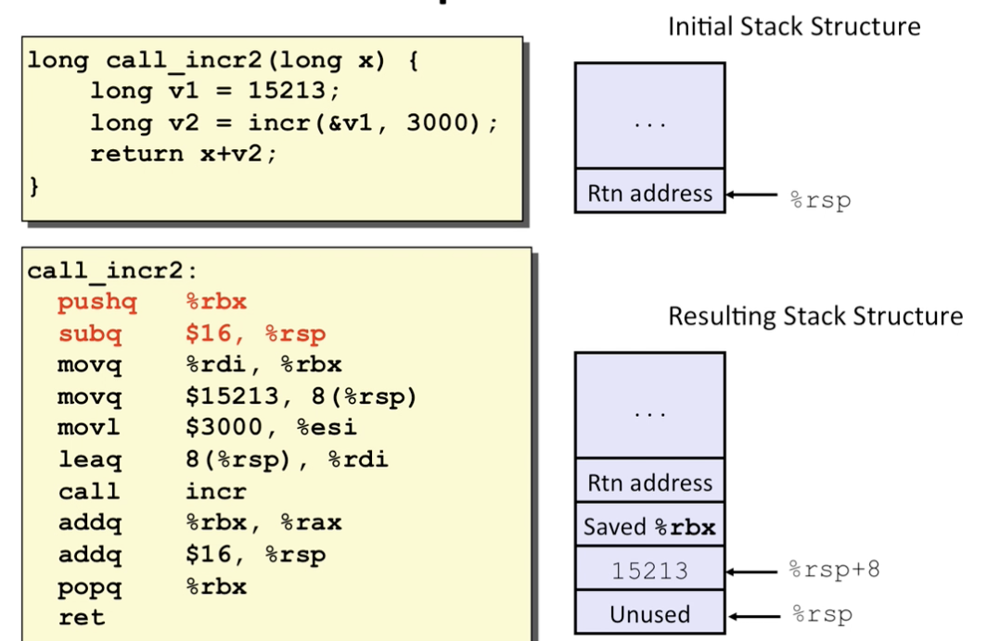
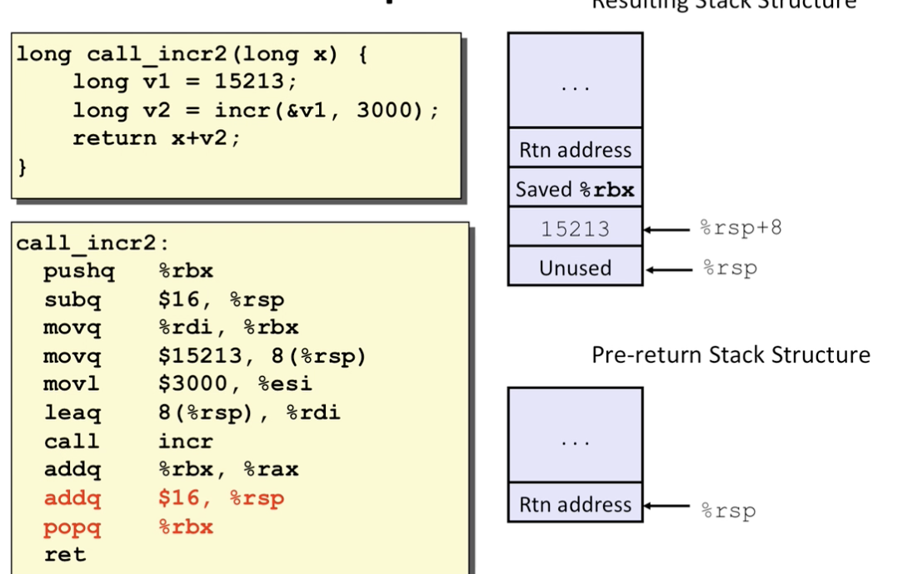
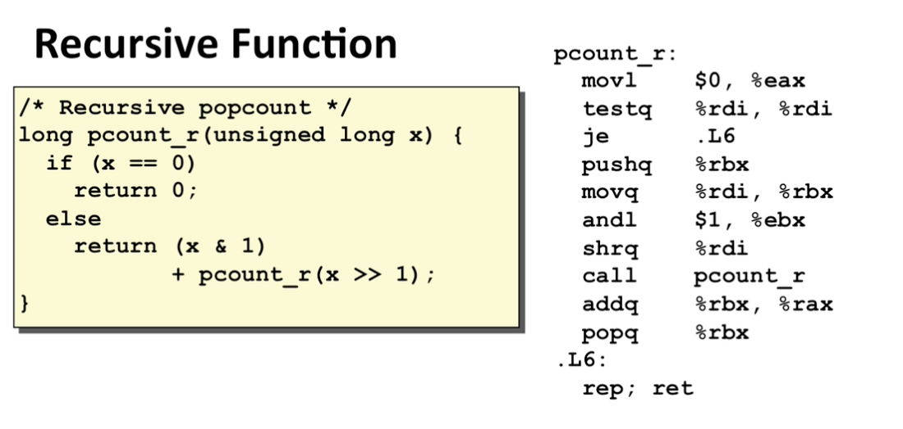
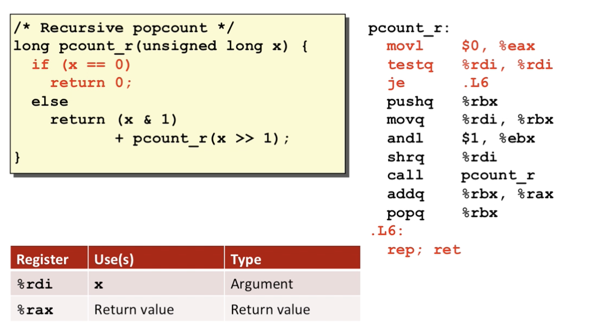
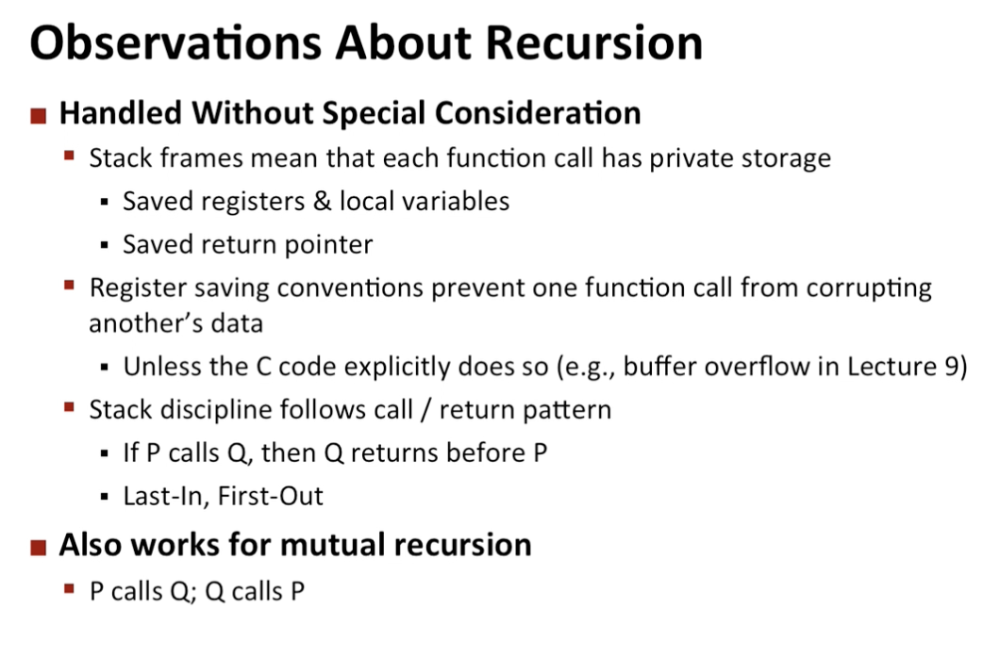
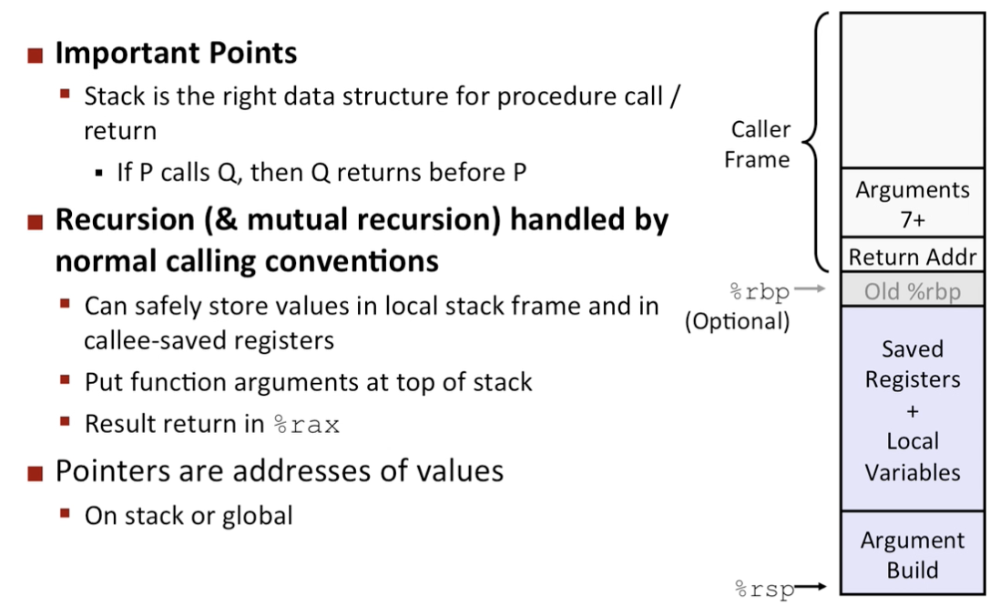

Intro
- ABI : interface of machine level programming
- Machanics in procedures
- passing ctrls
- know how to start proced call
- know how to return it
- passing data
- procedure args
- return val
- memory management
- allocation during the procedure call
- deallocate upon return
- machine all implenent with machine instrs
- passing ctrls
Stack structure

- adding an element = decrease the stack pointer
push
-
pushq SRC
- Fetch operand at SRC
- decrease %rsp by 8
- write operand at address given by %rsp
-
popq DST
- read val at addr given by rsp
- increase %rsp by 8
- store value at dest(must be register)
Calling convensions
Examples:

Procedure control flow
- use stack to support procedure call and return
- procedure call: call, label
- push return address to stack
- jump to label
- return address
- address of the next instr right after the call
- example from disassembly
- procedure return : ret
- pop addr from stack
- jump to addr
Example: we assume the stack top part is at 0x120,


- increase the stack pointer
- write the addr of the following instruction (going to return )
- change the dest addr to rip

- after ret instr is hit
- assume the top of stack has an address
- pop that addr
- jump to the addr
Passing data
According to ABI:

- for ints and pointers
Example:

Managing local data
stack based languages
- languages that supports recursion
- code must be reentrant((of an angle) pointing inward)
- multiple simultaneous instantiations of single procedure
- need some space to store data of each one
- args
- local vars
- return ptr
- code must be reentrant((of an angle) pointing inward)
- stack descipline
- state for given procedure need for limited time
- from when called to when return
- callee returns before caller does
- state for given procedure need for limited time
- stacks allocated in frames
- state for single procedure instantiation
example:

stack frames

- contents
- return info
- local stoarge (if needed )
- temp space (if needed )
- mamagement
- space allocated when enter procedure
- set-up mode
- includes push by call instr
- deallocated when return
- finish code
- includes pop by ret instr
- space allocated when enter procedure
Example:


- each one has its local state
stack frames looks like:

Example:


- red one allocs states

- movl stores the 2nd instr of the call
- lea is used to create pointers
- copy the computed address to rdi
then call instr


register saving convensions
- may be overwritten


x86-64 register usage


Example;


Recursion example


Observations about recursion

Summary
